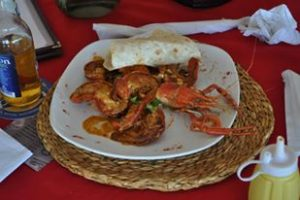

Robby Skeete
Chef Robby was born and raised in Castries (CDC) next to the famous Castries Market which is where his love for food and fresh produce and fruit emanated. Nestled in the heart of the city overlooking the Castries Harbor at Duty Free La Place Carenage is located Chef Robby’s Caribbean Pirates Restaurant Bar & Grill. His present pride and joy where he boosts the widest menu on island with everything one can find edible on land or sea and that’s no exaggeration, and to compliment it is his sister Café on Jeremie Street appropriately named Tet Beff. Chef Robby can also be found on every judging panel for most Culinary Competitions on Island and his also had a spell at parting his vast knowledge at Monroe College where he lectured for three years. Most of all Chef Robby is known for his passionate love for food and the creative use of local seafood. Ex National Athlete now National Cooking Coach a true son of the soil. Chef Robby personifies and represents St. Lucia in all he does.
Interview
You have cooked many types of cuisines during your illustrious career. What is it that makes Caribbean cuisine great, and what more needs to be done by (by chefs, restaurants and the hospitality sector etc.) in the islands in order to cement its position among the world’s best?
My name is Chef Robby of Caribbean Pirates of St Lucia. Whether my career has been illustrious or not is debatable but I have cooked many type of cuisines throughout my career and throughout my cooking experience and my travels and I’ve had numerous restaurants besides this one. This restaurant however, Caribbean Pirates is my baby!
What makes Caribbean cuisine great and unique I would say are our ingredients. Everything that I’ve learned and experienced internationally through all the different cuisines I’ve cooked can be replicated using Caribbean ingredients and more creative and innovative ideas can come out of the use of all our local ingredients. We have special local ingredients that cannot be found anywhere else. Some ingredients can be found but we have lost the knowledge of how use them like the old folks used to. For example, the bud of the breadfruit which is disposed of can be used to make candy fruit and not many people do that anymore. You have ingredients like breadnuts, meewees, different types of plums. We also have interesting tubers like tannia and wild yam, purple Cush Cush and sweet potatoes. We even have something called “tipitambo" or “topi nambur” the English name for it is Jerusalem artichoke. We have hog plums, sapodillas, pomme de lin which is similar to passion fruit. Some of these ingredients are indigenous to only St Lucia and some may be found in other Caribbean islands. We have giant crayfish which are similar to the tiny little crawfish you get in New Orleans. We have a crustacean that clings on to rocks called palood. Different islands call it different names. All these ingredients are unique to the Caribbean and to St Lucia and can be used to create interesting dishes. Unfortunately we take these ingredients for granted.
This subject matter is something that I am extremely passionate about. I grew up in the inner city, next to the Castries Market and as a young man, going back and forth to soccer practice, the Market was the first and last things I would see. It was the place we would go to get all our fresh fruit and vegetables, coconut water etc. and I lived a very healthy young life by being in such close proximity to the market. Hence the reason I’m so passionate about healthy eating and trying to pass this experience to other people by trying to get people to change their lifestyle by improving their eating habits in tandem with exercise.

So Caribbean cuisine is definitely unique and we have all of these fantastic ingredients we can use but the chefs, the restaurants and also the hospitality industry need to embrace these unique ingredients. Something I’m eager to do is to encourage the hotels change all their preserves on their buffets to all Caribbean fruits and forget about the strawberry jam and the raspberry jam. I would love to see it made mandatory that all hotels use guava, plum, soursop, pineapple, mango, papaya, and apricot jams and jellies. Just imagine if all the hotels did this we would bring down the import bill and a new cottage industry could be formed by the hotels buying those products and using them in their buffets.
So I believe that restaurants, chefs and the hospitality sector should find novel and innovative ways of incorporating these ingredients into their breakfast, snack and fine-dining menus. Forget the French fries, use breadfruit fries instead or even yam or dasheen fries. All our root vegetables can be cut into the shape of French fries and used instead or chopped and cubed into hash browns or roasties. We can give the tourists a completely new experience by utilizing these ingredients.
Your menu at the Caribbean Pirates Restaurant Bar and Grill boasts “everything one can find on land and sea”. What inspired you to feature such a range of local products so prominently in your restaurant, and why do you believe this approach has been so successful?
You’re right about this, my restaurant does boast the widest variety of sea food on any menu anywhere on the island or probably in any other country. These are so “prominently featured” to answer your question because I think it’s the way to go. Everything that is indigenous to our culture, all the traditional foods that we grew up on like black fish, sea urchins, bacalao, octopus, crayfish and lobsters, our local calamari (chess) plus all the tropical fish including the small inexpensive fish like sardines, balawoo, zorfi, jacks etc. can be utilized in novel and creative ways and can be used in fine dining. This is what has inspired me to feature all of these ingredients so prominently on my menu. I like to show people how wonderful those items are when they come. A lot of people come to my restaurant simply because it gives them a feeling of nostalgia; they know they can get something that can take them back into their childhood and also because here they can find something that is not readily available at any restaurant and even the hotels. Tourists have dined here and proclaimed it to be the best meal they have had so far on island because they when they eat at the hotels all they can find is international food, the same food that they have in their own countries. This is not the experience they should be getting. What they should get is a Caribbean culinary experience. Apart from enjoying our sun, sea and tours they should be experiencing our local foods rather than the same cuisine they indulge in at home.
This is why I have decided that this is the way to go in my restaurant. I use fresh local ingredients and I shop at the Castries market and the fish and meat markets 7 days a week. I believe the best way to go is to buy fresh meat, fillet mignons and steak but truth be told I don’t think the local production can sustain all the hotels but certainly in fish and in produce and in products in season. I think the hotels can design their menu around what is in season and what is available keeping the small trader trading and to help keep down the import bill and it would also do wonders for the food costs. If the hotels are really trying to keep food costs down and get their nice service charge or their nice big percentage for making their quota this is the way to go. Utilize all the local produce, design your menus around them, using what is in season and people can eat good wholesome healthy local food instead of having to import so much.
Something that I have been offering is a tapas version of tastes in the Caribbean. Instead of buying one meal for a small fee you can sample up to 20 different interesting items indigenous to St Lucian culture and other Caribbean islands. This is something I think more hotels and restaurants should offer.
The sustainability and future growth of Caribbean cuisine depends on local farmers, fisherfolk and other food producers continuing to provide great ingredients from land and sea. What role can chefs play to support local farmers and fisherfolk, and to encourage younger generations to take interest in farming and fishing? How can the growing prominence of Caribbean cuisine contribute to better livelihoods and resilience for farmers and fisherfolk?
That goes without saying. Some of what I’ve been talking about pertains to this. Just imagine if all the hotels were to use our local items and it got to a stage where fishermen and farmers could not produce enough to keep up with the hotels then there would be a demand created and young people would see some sort of livelihood in it. So instead of hanging out on the “block” the young men might be encouraged to go diving for sea-urchins, or to go and catch crayfish because the hotels are craving for it to put on their menus. Imagine if all the hotels were buying the, breadfruit, purple Cush Cush (yam) – how many farmers would be more motivated to plant more of these types of produce. Think if all the hotels were buying the jams how many more farmers would plant those kinds of fruit so that they could turn them into jams as opposed to just juicing them. Apart from jams chutneys and relishes could also be made with all those local products. So by creating demand for those items that are local and indigenous by the hotels including these types of foods on their menus and creating a St Lucian (and Caribbean) culinary identity, we can support our fisherfolk and farmers and encourage young people to go into farming and fishing. Where there is a demand entrepreneurs will make the necessary adjustments to capitalize on that demand. We can create so many new industries by getting the hotels and fine dining restaurants to start thinking that way. The smaller street side places do this but not on a large enough scale to put a dent into what is available presently. Dasheens, green figs (banana), breadfruit and sweet potatoes cost next to nothing at the market and can be utilized by all our hotels of which there are many. St Lucia has more hotels than many other islands and we have a large tourist industry. We should have food competitions celebrating our local ingredients, getting people to use them, getting the chefs to demonstrate how these ingredients can be used in different ways.
So therefore we need to create a demand, show that there is money to be made in these things, the hotels need to show an interest in purchasing the local ingredients so that the young people can see the business benefits that can be made, instead of remaining idle.
As I said I’m very passionate about this subject matter and I do whatever can do to help or change the situation but I’m just one person.
You were recently a judge in the S. Pellegrino and Acqua Panna Caribbean Junior Chef Champions, which was won by a fellow St Lucian, Edna Butcher. How would you advise aspiring and young chefs who want their cooking to reflect their Caribbean heritage?
Yes I did judge the San Pellegrino Acqua Panna Caribbean Junior Chef Competition and many others and the young lady who won it happens to be part of the national cooking team which I coach. Edna Butcher is an absolutely fantastic chef and she won hands down. Whether her dish consisted of Caribbean ingredients and concepts is debatable but she did produce wonderful food using some local ingredients. Some of her ideas were Italian and there was a bit of an Oriental layout of the food, but she did a fantastic job putting local products together, creating a wonderful flavor and wowing our taste buds. Her presentation was spectacular.
My advice to young aspiring chefs who would like to reflect Caribbean heritage in their cuisine is to do their research and find out what foods are indigenous to our culture from the old folks and how these foods are prepared. Take this knowledge into their kitchens and present them in novel Caribbean fine dining presentations. Salt fish and green fig, breadfruit and smoked herring are part of our national food but we take it for granted. We just boil the produce and stew the salt fish and we enjoy it but these same ingredients can be taken and we can make for instance, a salt fish soufflé or napoleons with exquisite presentation.
So therefore my advice to the young chefs is to not take your local foods for granted. Look at all the street side foods we eat like roasted breadfruit and salt fish, the palowd and crawfish, harness these ideas and bring them out into a wonderful Caribbean cuisine and be known for it. Chef Nina is doing her thing outside of St Lucia, incorporating local cuisine with international cuisine in a wonderful fusion. At one time I wanted to open an Oriental Caribbean/Italian kitchen, meshing all those three cuisines which are cuisines that I love. I love Italian and Oriental foods. But my culture is Caribbean and I have so many ingredients indigenous of my culture that I can incorporate to produce Italian and Oriental ideas. For instance a local stir fry can be done with our local vegetables, crockets, roosties and hash browns can be done using our root vegetables and tubers rather than Irish potatoes.
So go out, embrace your heritage and your food culture, find out about the foods of the old days and how they were prepared and go into the kitchens and be creative, get some kind of food identity.
In conclusion I’d like to say I am more than happy to assist in whatever way I can in making any major changes in agro tourism or culinary tourism. I am extremely passionate changing things in St Lucia along culinary lines and getting young people involved in the culinary arts. I would love to see all kitchens in all the hotels manned by young local chefs. Why do we need French, Belgium and Swedish heading our hotel kitchens while the local junior staff are doing all the cooking. They need the education so that they can be in charge of their kitchens, doing the food costings, meat fabrication, scheduling, planning and engineering of the whole kitchen brigade. This would be my ultimate change… to see all the hotel kitchens in St Lucia manned by local or at least Caribbean chefs instead of employing the services of chefs from overseas to engineer culinary arts in our local kitchens.
On this note I’d like to say thank you for the opportunity to air my thoughts on the culinary changes I’d like to see take place in my humble island of St Lucia. Thank you.
Images: unless stated otherwise, all images are (c) Chef Robby/ Caribbean Pirates Restaurant Bar & Grill